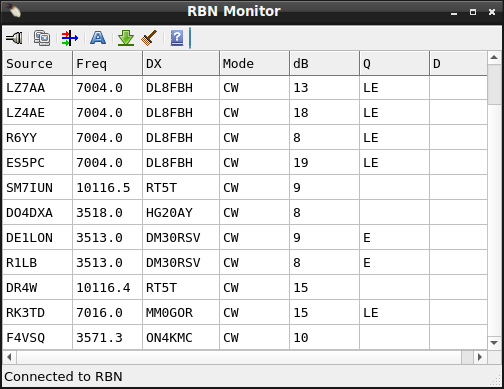
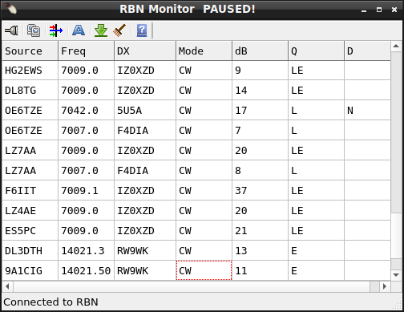
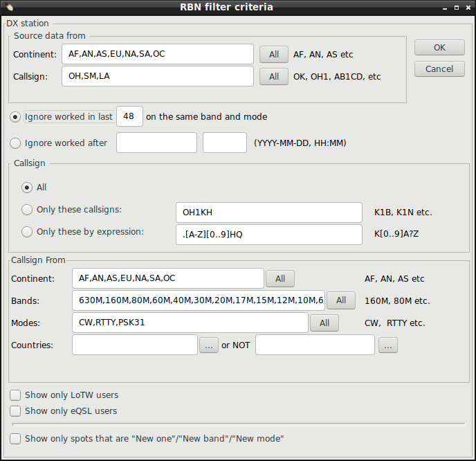

|
WARNING! Backup your data often! BACKUP your log directory at the end of EVERY session! All that you need to backup and store in a safe place is the log database directory located in the ~/.config/cqrlog/database folder, or you can enable the autobackup function in Preferences. This autobackup function creates an ADIF file with a backup of your log. /td> |
| [Menu] |

RBN monitor window opens from NewQSO/Window/RBN monitor.
Grid cells for DX heard:
|
Tool buttons from left to right are:
|
|  |  |
If any column in any RBN spot row is clicked scrolling is paused to enable better study of spot. If tool button "Go to last line" is pressed, or if focus is moved to another form than RBN monitor, display scrolling is again released. Double click on any column of RBN spot row will take the DX callsign of that row to New QSO and move rig frequency to DX frequency (if rig CAT is used). That also releases display scrolling again.
With other tool buttons you can:
Set RBN address to connect and username to use.
Set filter criteria for RBN

Set font for RBN grid
| [Menu] |